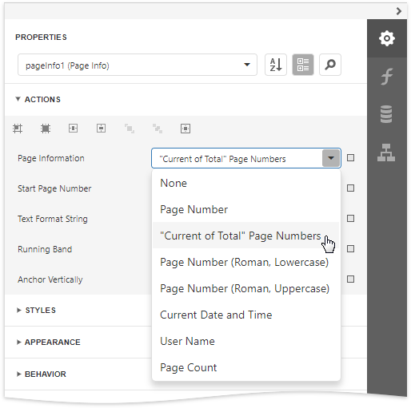

Page Info
The Page Info control is used to display auxiliary information on report pages, such as date, time, page numbers or user name.
To add a new Page Info control to a report, drag the Page Info item from the Toolbox and drop it onto the required report band.
Use the Page Information property to define the kind of information the control displays: page numbers, system date-time, or user name.

For examples of different uses of this control, see the corresponding tutorials:
Note
Because usually this information is displayed in the Page Header/Footer and Top/Bottom Margin bands, you cannot bind the Page Info property to a field from a data source. So, in order to display dynamic information, use the Label or Rich Text controls instead.
In addition, a format string can be applied to a control's contents. For example, you can change the control's format to Page {0} of {1} using the Text Format String property.

When a report contains at least one group, you can specify individual page numbers for report groups by setting the Running Band property to the name of the required group.